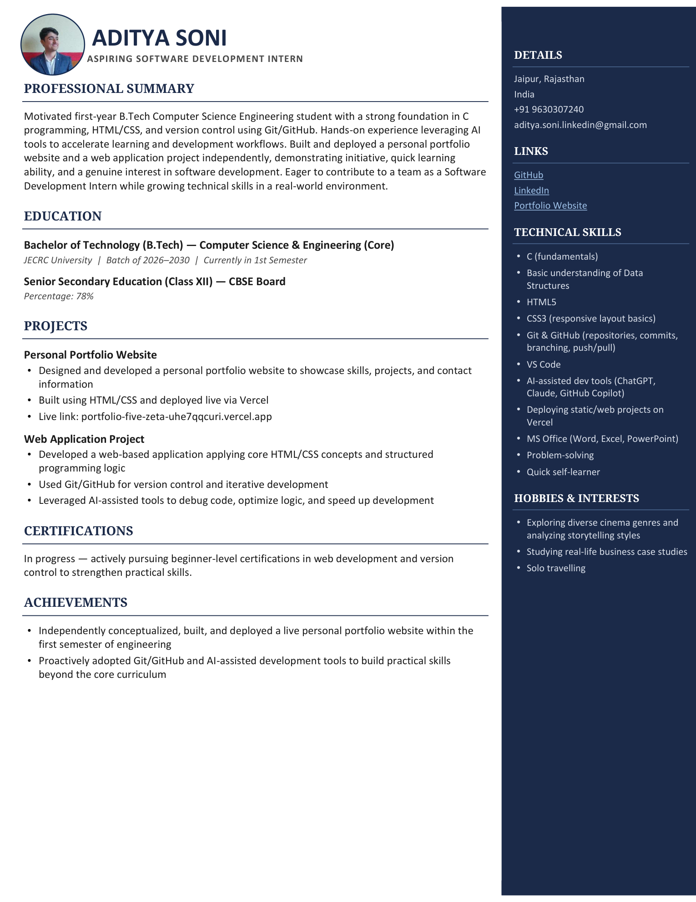

Creative Software &
Neural Developer
I am Aditya Soni, a 1st-year B.Tech Computer Science student at JECRC University, Jaipur. Deeply passionate about developing real-world skills, understanding the Mathematics behind Neural Networks & Machine Learning, and building high-performance software—from live Vercel web apps to Formula 1 race telemetry models.
About Me
Who I am, what ignites my curiosity, and the multidisciplinary interests shaping my engineering journey.
Engineering Mindset & The Neural Network Passion
I am Aditya Soni, a student pursuing my Bachelor of Technology in Computer Science & Engineering at JECRC University, Jaipur. My objective is to master real-world skills in the tech field, moving beyond rote syntax to build functional, scalable systems.
I have an intense fascination with Neural Networks, Machine Learning, and the pure Mathematics powering them: matrix transformations in linear algebra, multivariable calculus gradients ($\partial L/\partial W$) in backpropagation, and probabilistic optimization. To me, algorithms are the bridge between mathematical beauty and real-world software applications.
Formula 1 Enthusiast
A high-octane passion for Formula 1 motorsport engineering. Deeply interested in cornering aerodynamics, race telemetry physics, tire compound wear degradation, and split-second pit strategy.
Solo Traveling & Exploration
My favorite hobby is solo travelling across Indian cities and serene routes. Stepping into unfamiliar environments builds self-reliance, observation, independent decision-making, and high adaptability.
Exploring Cinema Styles
An avid cinema enthusiast who analyzes visual grammar, lighting, atmospheric color palettes, and auteur directorial styles (Christopher Nolan, Denis Villeneuve, David Fincher). Inspires my visual aesthetic and UI craft.
Education Timeline
The foundational institutions and undergraduate studies shaping my computer science logic.
Bachelor of Technology (B.Tech) — Computer Science & Engineering (Core)
Batch of 2026–2030 • Currently in 1st Semester. Rigorous foundation in C programming, Data Structures & Algorithms, Engineering Mathematics, Discrete Logic, and applied AI workflows.
Senior Secondary Education (Class XII) — CBSE Board
Percentage: 78% • Built a solid understanding in Physics, Chemistry, Mathematics, and Computer Science foundations.
Secondary School Education (Class X)
Completed Class 10th schooling. Fostered my earliest curiosity for scientific problem solving, analytical reasoning, and computing.
Technical Arsenal
Exact competencies from my attached resume combined with my dedicated focus on Neural Networks and Mathematics.
C (Fundamentals)
Curriculum • Core StackStrong foundation in C language syntax, pointer arithmetic, memory management, functions, and structured modular coding.
Data Structures
Algorithmic Problem SolvingBasic understanding of Data Structures including Arrays, Linked Lists, Stacks, Queues, Binary Search, and Big-O efficiency analysis.
HTML5 & CSS3
Responsive Layout BasicsSemantic markup, Flexbox, CSS Grid, media queries for mobile-friendly layouts, glassmorphism aesthetics, and clean UI design.
Git & GitHub
Version Control
Hands-on version control workflows: creating repositories, atomic commits, branching, merging, and push/pull tracking on GitHub (github.com/Adit-commit).
AI-Assisted Dev Tools
Accelerated LearningLeveraging state-of-the-art AI development tools (ChatGPT, Claude, GitHub Copilot) to accelerate development workflows, debug code, and explore complex logic.
Vercel Deployment
Static & Web HostingExperience deploying static web projects independently via Vercel with automated CI/CD and continuous Git repository synchronization.
Neural Networks & Math
Special PassionPerceptrons from scratch, multivariable calculus backpropagation gradients, linear algebra matrix operations, and Python scientific stack (NumPy, Scikit-Learn).
VS Code & Soft Skills
Workflow & MindsetProficient in VS Code extensions, MS Office (Word, Excel, PowerPoint), analytical problem solving, and quick self-learning velocity.
Featured Projects
Directly showcasing the projects from my attached resume along with my exploratory Neural Network and Formula 1 builds.
Personal Portfolio Website
Designed and developed an independent personal portfolio website to showcase skills, projects, and contact channels. Built with HTML/CSS and deployed live via Vercel.
- Independently conceptualized, built, and deployed within the 1st semester of engineering.
- Responsive layouts calibrated across mobile, tablet, and widescreen desktop monitors.
- Live link: portfolio-five-zeta-uhe7qqcuri.vercel.app
Web Application Project
Developed a web-based application applying core HTML/CSS concepts and structured programming logic. Managed iteratively via Git/GitHub.
- Applied structured programming logic and clean semantic DOM hierarchy.
- Used Git/GitHub for version control and atomic commit history tracking.
- Leveraged AI-assisted development tools (ChatGPT, Claude, GitHub Copilot) to debug code and optimize logic.
NeuroSim: Neural Network & Backprop Visualizer
An educational computational framework built from scratch to demystify neural network mathematics without high-level black-box ML frameworks.
- Manual implementation of forward propagation & backpropagation gradient updates.
- Visualizes matrix activations (Sigmoid, ReLU) and cost minimization across training epochs.
- Demonstrates multivariable chain rule partial derivatives ($\partial L/\partial W$) step-by-step.
ApexTelemetry: F1 Lap Time & Tire Decay Predictor
Inspired by Formula 1 race engineering. Forecasts tire compound decay curves and optimal pit-stop windows using regression algorithms and telemetry physics.
- Regression models predicting stint duration for Soft, Medium, and Hard compounds.
- Analyzes corner entry speed, track temperature, and fuel mass drop deltas.
- Undercut vs. Overcut strategic advantage calculator.
Official Resume
Directly presenting my attached resume document. Preview the high-resolution visual layout or download in official PDF & DOCX formats.

AI Generated Certificate
Autonomous credential attestations verifying foundational competence in Neural Networks, Machine Learning pipelines, and computational thinking.
In recognition of demonstrated proficiency in Foundational Neural Networks, Python Scientific Computing, Algorithmic Logic, and the Mathematics of Machine Learning.
Cryptographic Proof
HASH: SHA256-AS-2026-X984Generated dynamically via HTML5 Canvas vector rendering at 1920×1080 resolution with high-resolution cyber-gold gradients and cryptographic stamps.
• Recipient: ADITYA SONI
• Domain: Neural Networks & ML Foundations
• Attestation ID: AS-AIML-2026-X984
• Status: Attested • 100% Authentic
Get In Touch
Open to software development internship opportunities, collaborative AI/ML builds, and tech conversations.
Send a Transmission
Have an opportunity, internship offer, or project inquiry? Drop a note below.